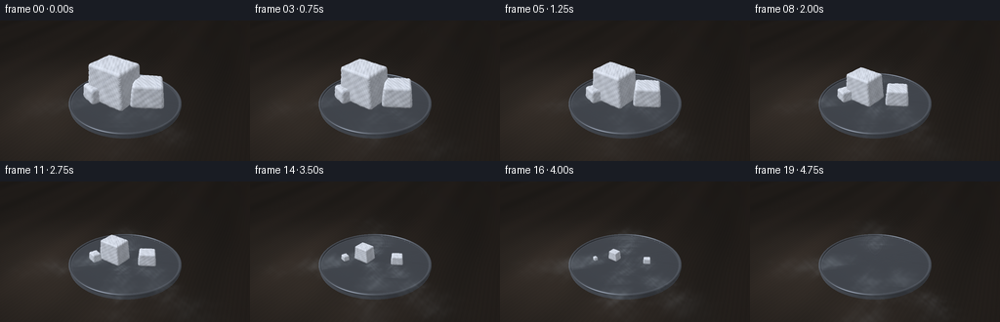
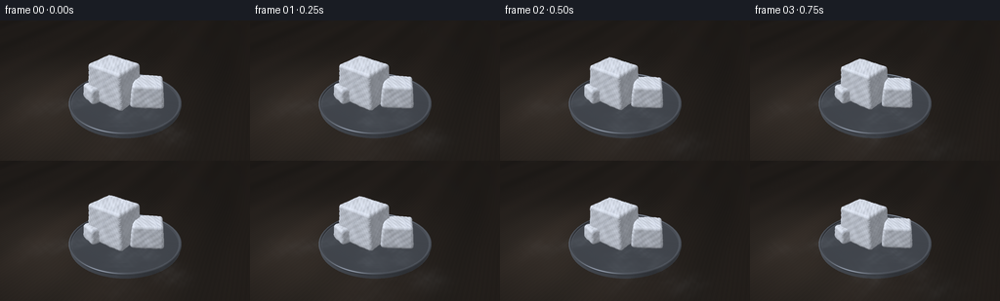
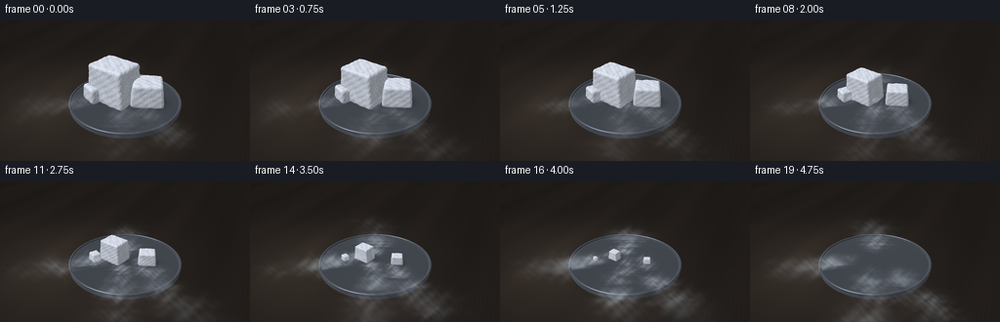
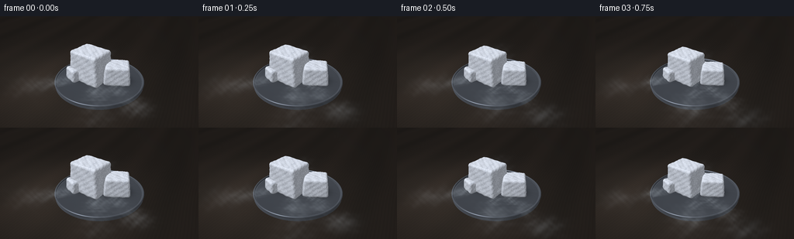

CODING AGENTS AS PIXEL WORLD MODELS
traex/GPT-6.1-Sol · phygen_116
点击播放 · 原生 RGB 像素
逐轮保存的候选
回放视频、检查图与代码变化。
每份候选均可单独播放。实际图片检查记录在下方工具轨迹中。
候选 01播放与检查图
点击播放 · 原生 RGB 像素


展开代码变化
--- 上一保存版本
+++ 本次保存版本
@@ -0,0 +1,220 @@
+from pathlib import Path
+import math
+import numpy as np
+from PIL import Image, ImageDraw, ImageFilter
+import artifact_io
+
+ROOT=Path(__file__).resolve().parent
+W,H=768,432
+rng=np.random.default_rng(119)
+yy,xx=np.mgrid[0:H,0:W].astype(np.float32)
+# Fixed close-up camera, with an elevated view of a cool metal sublimation dish.
+cam=np.array([4.3,-8.6,6.3],np.float32)
+target=np.array([0,0,.64],np.float32)
+fwd=target-cam; fwd/=np.linalg.norm(fwd)
+right=np.cross(fwd,[0,0,1]); right/=np.linalg.norm(right)
+up=np.cross(right,fwd)
+focal=790.
+dirs=fwd[None,None,:]+((xx-W*.50)/focal)[...,None]*right+((H*.50-yy)/focal)[...,None]*up
+dirs=dirs.astype(np.float32); dirs/=np.linalg.norm(dirs,axis=-1)[...,None]
+light=np.array([-3,-4,7.],np.float32); light/=np.linalg.norm(light)
+
+def project(p):
+ v=np.asarray(p)-cam
+ dep=np.dot(v,fwd)
+ return W*.5+focal*np.dot(v,right)/dep, H*.5-focal*np.dot(v,up)/dep,dep
+
+def noise3(p):
+ x,y,z=p[...,0],p[...,1],p[...,2]
+ return (.46*np.sin(7.3*x+3.1*y+4.6*z)*np.sin(5.4*y-3.3*z+1.7*x)+.28*np.sin(16*x+12*y-9*z)*np.sin(13*z-10*y)+.16*np.sin(39*x+24*y+27*z)+.1*np.sin(83*x-66*y+79*z))
+
+def cyl_sdf(p):
+ r=np.sqrt(p[...,0]**2+p[...,1]**2)
+ a=r-2.42; b=np.abs(p[...,2]-.13)-.08
+ return np.minimum(np.maximum(a,b),0)+np.sqrt(np.maximum(a,0)**2+np.maximum(b,0)**2)
+
+def dish_sdf(p):
+ radial=np.sqrt(p[...,0]**2+p[...,1]**2)
+ rim=np.sqrt((radial-2.40)**2+(p[...,2]-.245)**2)-.052
+ return np.minimum(cyl_sdf(p),rim)
+
+def march(sdf, ro, rd, initial, steps=90):
+ t=initial.copy(); alive=np.ones(t.shape,bool); hit=np.zeros(t.shape,bool)
+ for _ in range(steps):
+ ids=np.flatnonzero(alive)
+ if len(ids)==0: break
+ p=ro+rd[ids]*t[ids,None]
+ d=sdf(p)
+ done=np.abs(d)<.0012
+ hit[ids[done]]=True
+ t[ids]+=np.maximum(d,.0007)*.78
+ alive[ids[done]]=False
+ alive[t>18]=False
+ return t,hit
+
+def normal(sdf,p):
+ e=.003
+ n=np.stack([sdf(p+np.eye(3,dtype=np.float32)[i]*e)-sdf(p-np.eye(3,dtype=np.float32)[i]*e) for i in range(3)],axis=-1)
+ return n/np.maximum(np.linalg.norm(n,axis=-1,keepdims=True),1e-6)
+
+# Background is a softly lit, charcoal work surface. Texture stays fixed across time.
+tplane=(-cam[2])/dirs[...,2]
+pplane=cam+dirs*tplane[...,None]
+px,py=pplane[...,0],pplane[...,1]
+grains=.9*np.sin(px*42+2.5*np.sin(py*.8))+ .6*np.sin(px*113+py*.14)+.35*np.sin(px*246+py*.7)
+broad=1.8*np.sin(px*1.4+py*.13)+.9*np.sin(px*3.1)
+illum=22*np.exp(-((px+2.0)**2/24+(py+1.5)**2/15))
+base=np.stack([33+illum+broad+grains,29+illum*.86+broad*.7+grains*.8,26+illum*.74+broad*.6+grains*.7],-1)
+# Real depth-of-field: distant tabletop loses its fine texture.
+raw=Image.fromarray(np.uint8(np.clip(base,0,255)))
+blur=np.asarray(raw.filter(ImageFilter.GaussianBlur(3.0))).astype(np.float32)
+blend=np.clip((py-2.0)/7,0,.95)[...,None]
+base=base*(1-blend)+blur*blend
+# Plate contact shadow and broad, soft shadow of the dry ice.
+rad=np.sqrt(px**2+py**2)
+shadow=.30*np.exp(-((px-.05)/2.3)**2-((py+.1)/1.9)**2)
+base*=1-shadow[...,None]
+# Ray-traced metal dish, satin steel with a rolled bright rim.
+rd=dirs.reshape(-1,3)
+ts,hits=march(dish_sdf,cam,rd,np.full(W*H,7.,np.float32),110)
+ids=np.flatnonzero(hits)
+p=cam+rd[ids]*ts[ids,None]
+n=normal(dish_sdf,p)
+radial=np.sqrt(p[:,0]**2+p[:,1]**2)
+diff=np.clip(n@light,0,1)
+halfvec=light[None,:]-rd[ids]; halfvec/=np.linalg.norm(halfvec,axis=-1)[:,None]
+spec=np.clip(np.sum(n*halfvec,axis=-1),0,1)**45
+fres=(1-np.clip(np.sum(n*(-rd[ids]),axis=-1),0,1))**3
+brushed=2*np.sin(radial*195)+.8*np.sin(radial*450)
+val=45+diff*45+spec*140+fres*25+brushed
+metal=np.stack([val*.92,val*.98,val*1.08],-1)
+# Dark, shallow circular interior; the object is resting on a dry surface, never melting.
+interior=(radial<2.32)&(p[:,2]>.20)
+metal[interior]*=.85
+base.reshape(-1,3)[ids]=metal
+base=np.clip(base,0,255)
+plate_depth=np.full(W*H,99.,np.float32); plate_depth[ids]=ts[ids]
+
+# Stable local orientations of irregular beveled blocks.
+chunks=[((-0.48,-.08),np.array([.91,.73,.83]),-.19,1),((.93,.25),np.array([.67,.58,.52]),.39,2),((-1.2,-.55),np.array([.43,.38,.35]),-.52,3)]
+
+def chunk_render(image,t):
+ depth=plate_depth.copy()
+ # Accelerated time: all three solid chunks recede into gas; no puddle or liquid phase.
+ scale=max(0,1-(t/.94)**1.18)**.70
+ if scale<.01:return image,depth
+ for (cx,cy),b0,ang,seed in chunks:
+ s=scale*(1-.06*t*(seed-1))
+ b=b0*s
+ center=np.array([cx,cy,.214+b[2]],np.float32)
+ c,si=np.cos(ang),np.sin(ang)
+ R=np.array([[c,-si,0],[si,c,0],[0,0,1]],np.float32)
+ radius=.125*s
+ def sdf(q):
+ q=(q-center)@R
+ # Uneven, tapered shoulders and a chalky granular rather than glassy surface.
+ qx=q[...,0]*(1+.075*q[...,2]/max(b[2],.01))
+ qy=q[...,1]*(1+.055*q[...,2]/max(b[2],.01))
+ q2=np.stack([qx,qy,q[...,2]],-1)
+ d=np.abs(q2)-(b-radius)
+ rounded=np.linalg.norm(np.maximum(d,0),axis=-1)+np.minimum(np.max(d,axis=-1),0)-radius
+ rough=noise3(q/max(s,.09)+seed*.54)
+ return rounded+(.022*s)*rough
+ xp,yp,dd=project(center)
+ rr=focal*np.linalg.norm(b)/dd*1.18
+ x0,x1=max(0,int(xp-rr)),min(W,int(xp+rr)+1)
+ y0,y1=max(0,int(yp-rr)),min(H,int(yp+rr)+1)
+ idx=(np.arange(y0,y1)[:,None]*W+np.arange(x0,x1)[None,:]).ravel()
+ dsub=rd[idx]
+ initial=np.full(len(idx),max(1.,np.linalg.norm(center-cam)-np.linalg.norm(b)-.15),np.float32)
+ dis,hit=march(sdf,cam,dsub,initial,100)
+ local=np.flatnonzero(hit&(dis<depth[idx]))
+ j=idx[local]
+ if len(j)==0:continue
+ pt=cam+rd[j]*dis[local,None]
+ nrm=normal(sdf,pt)
+ dif=np.maximum(0,nrm@light)
+ q=(pt-center)@R/max(s,.09)
+ tex=noise3(q+seed*.54)
+ # Fine frost crystals catch the large window light. Blue occlusion in the sides.
+ grain=(np.sin(q[:,0]*233+q[:,1]*187+q[:,2]*191)*np.sin(q[:,0]*141-q[:,2]*243))
+ hi=np.clip(grain-.33,0,1)*16
+ shade=132+dif*93+12*nrm[:,2]+tex*12+hi
+ low=np.clip((pt[:,2]-.214)/(.3*s),0,1)
+ shade*=.86+.14*low
+ color=np.stack([shade*.96,shade*.99,shade*1.045],-1)
+ # Thin fractures in the frosted block persist as its surface recedes.
+ cr=np.abs(q[:,0]+.23*np.sin(q[:,2]*5+seed)+.17*q[:,1]-.1)
+ fracture=np.exp(-(cr/.010)**2)*np.clip((q[:,2]+.25)*1.6,0,1)
+ color-=fracture[:,None]*np.array([19,17,12])
+ image.reshape(-1,3)[j]=np.clip(color,0,255)
+ depth[j]=dis[local]
+ return image,depth
+
+# Billowing, low-lying condensed water fog. Each puff follows a smooth path from
+# the solid over the lip, then down to the tabletop (CO2 gas itself is invisible).
+puffs=[]
+for k in range(104):
+ birth=-2.8+k*.093
+ branch=k%4
+ speed=rng.uniform(.7,1.3)
+ phase=rng.uniform(0,2*np.pi)
+ puffs.append((birth,branch,speed,phase,rng.uniform(.75,1.22)))
+
+def vapor(image,depth,t,layer):
+ time=t*5.8
+ density=np.zeros((H,W),np.float32)
+ # A vapor source grows with warming, then dwindles once the solid has gone.
+ for birth,branch,speed,phase,amp in puffs:
+ age=time-birth
+ if age<0 or age>3.2:continue
+ u=age*speed
+ source_t=max(0,birth/5.8)
+ if source_t>.93:continue
+ strength=(.40+.70*min(source_t/.55,1))*max(.05,1-(max(source_t-.72,0)/.23))
+ if branch==0:
+ x=-.5-.77*u; y=-.2-.62*u
+ elif branch==1:
+ x=.65+.95*u; y=-.1-.67*u
+ elif branch==2:
+ x=.1+.40*u; y=-.25-1.00*u
+ else:
+ x=-.05-.42*u; y=.1+.85*u
+ z=.44+.20*np.sin(age*1.9+phase)*np.exp(-age*.75)-.15*min(age,2)
+ z=max(.09,z)
+ x+=.15*np.sin(age*3+phase); y+=.12*np.cos(age*2.4+phase)
+ sx,sy,dist=project([x,y,z])
+ size=(.25+.22*age)*amp
+ rx=focal*size/dist; ry=rx*(.50+.07*np.sin(age+phase))
+ x0,x1=max(0,int(sx-rx*2.8)),min(W,int(sx+rx*2.8)+1)
+ y0,y1=max(0,int(sy-ry*3)),min(H,int(sy+ry*3)+1)
+ if x1<=x0 or y1<=y0:continue
+ X=(xx[y0:y1,x0:x1]-sx)/rx; Y=(yy[y0:y1,x0:x1]-sy)/ry
+ # Distorted density gives wispy filaments, avoiding circular smoke sprites.
+ wx=X+.15*np.sin(Y*4+phase+time*.45)+.09*np.sin(Y*8-X*2+time)
+ wy=Y+.14*np.sin(X*5-phase-time*.5)+.09*np.sin(X*10+Y*4)
+ gaussian=np.exp(-1.5*(wx**2+wy**2))
+ tendril=.68+.23*np.sin(X*7+Y*4+phase-age*1.3)+.12*np.sin(X*15-Y*8+phase)
+ opacity=.10*strength*np.sin(min(age/.20,1)*np.pi/2)*np.exp(-age*.46)*amp
+ region=depth.reshape(H,W)[y0:y1,x0:x1]
+ visible=(dist<region+.12) if layer=='front' else (dist>=region+.12)
+ density[y0:y1,x0:x1]+=gaussian*tendril*opacity*visible
+ alpha=(1-np.exp(-density*2.1))[...,None]
+ # Cool-white fog lit by the same side window as the crystalline solid.
+ fog=np.empty_like(image); fog[:]=[185,198,209]
+ return image*(1-alpha)+fog*alpha
+
+frames=[]
+for i in range(20):
+ t=i/19
+ im=base.copy()
+ im,depth=chunk_render(im,t)
+ im=vapor(im,depth,t,'front')
+ # Subtle optical falloff, unchanged camera and illumination throughout.
+ vignette=1-.15*((xx-W/2)/(W*.75))**2-.09*((yy-H/2)/(H*.9))**2
+ im*=vignette[...,None]
+ im=Image.fromarray(np.uint8(np.clip(im,0,255))).resize((256,144),Image.Resampling.LANCZOS)
+ frames.append(np.asarray(im))
+ print('Rendered',i,flush=True)
+artifact_io.save(np.stack(frames),ROOT)
+print('Saved output artifacts',flush=True)
候选 02播放与检查图
点击播放 · 原生 RGB 像素


展开代码变化
--- 上一保存版本
+++ 本次保存版本
@@ -26,7 +26,23 @@
def noise3(p):
x,y,z=p[...,0],p[...,1],p[...,2]
- return (.46*np.sin(7.3*x+3.1*y+4.6*z)*np.sin(5.4*y-3.3*z+1.7*x)+.28*np.sin(16*x+12*y-9*z)*np.sin(13*z-10*y)+.16*np.sin(39*x+24*y+27*z)+.1*np.sin(83*x-66*y+79*z))
+ return (.64*np.sin(7.3*x+3.1*y+4.6*z)*np.sin(5.4*y-3.3*z+1.7*x)+.36*np.sin(16*x+12*y-9*z)*np.sin(13*z-10*y))
+
+def frost_noise(p):
+ q=p*36.0
+ v=np.floor(q).astype(np.int32)
+ f=q-v; f=f*f*(3-2*f)
+ out=np.zeros(len(q),np.float32)
+ for a in range(2):
+ for b in range(2):
+ for c in range(2):
+ code=(v[:,0]+a)*73856093 ^ (v[:,1]+b)*19349663 ^ (v[:,2]+c)*83492791
+ code=code.astype(np.uint32)
+ code^=code>>13; code*=np.uint32(1274126177); code^=code>>16
+ val=code.astype(np.float64)/4294967295.0
+ w=(f[:,0] if a else 1-f[:,0])*(f[:,1] if b else 1-f[:,1])*(f[:,2] if c else 1-f[:,2])
+ out+=w*val
+ return (out-.5)*2
def cyl_sdf(p):
r=np.sqrt(p[...,0]**2+p[...,1]**2)
@@ -103,6 +119,15 @@
# Accelerated time: all three solid chunks recede into gas; no puddle or liquid phase.
scale=max(0,1-(t/.94)**1.18)**.70
if scale<.01:return image,depth
+ # Soft light-source-consistent shadows bond each shrinking solid to the dish.
+ shade=np.ones(len(ids),np.float32)
+ for (cx,cy),b0,ang,seed in chunks:
+ sx,sy=b0[0]*scale,b0[1]*scale
+ dx=p[:,0]-cx-b0[2]*scale*.28
+ dy=p[:,1]-cy-b0[2]*scale*.32
+ sh=.49*np.exp(-1.4*((dx/max(sx,.03))**2+(dy/max(sy,.03))**2))
+ shade*=1-sh
+ image.reshape(-1,3)[ids]*=shade[:,None]
for (cx,cy),b0,ang,seed in chunks:
s=scale*(1-.06*t*(seed-1))
b=b0*s
@@ -137,9 +162,9 @@
q=(pt-center)@R/max(s,.09)
tex=noise3(q+seed*.54)
# Fine frost crystals catch the large window light. Blue occlusion in the sides.
- grain=(np.sin(q[:,0]*233+q[:,1]*187+q[:,2]*191)*np.sin(q[:,0]*141-q[:,2]*243))
+ grain=frost_noise(q)
hi=np.clip(grain-.33,0,1)*16
- shade=132+dif*93+12*nrm[:,2]+tex*12+hi
+ shade=132+dif*93+12*nrm[:,2]+tex*5+grain*15+hi
low=np.clip((pt[:,2]-.214)/(.3*s),0,1)
shade*=.86+.14*low
color=np.stack([shade*.96,shade*.99,shade*1.045],-1)
@@ -195,13 +220,13 @@
wy=Y+.14*np.sin(X*5-phase-time*.5)+.09*np.sin(X*10+Y*4)
gaussian=np.exp(-1.5*(wx**2+wy**2))
tendril=.68+.23*np.sin(X*7+Y*4+phase-age*1.3)+.12*np.sin(X*15-Y*8+phase)
- opacity=.10*strength*np.sin(min(age/.20,1)*np.pi/2)*np.exp(-age*.46)*amp
+ opacity=.33*strength*np.sin(min(age/.20,1)*np.pi/2)*np.exp(-age*.46)*amp
region=depth.reshape(H,W)[y0:y1,x0:x1]
visible=(dist<region+.12) if layer=='front' else (dist>=region+.12)
density[y0:y1,x0:x1]+=gaussian*tendril*opacity*visible
alpha=(1-np.exp(-density*2.1))[...,None]
# Cool-white fog lit by the same side window as the crystalline solid.
- fog=np.empty_like(image); fog[:]=[185,198,209]
+ fog=np.empty_like(image); fog[:]=[205,216,226]
return image*(1-alpha)+fog*alpha
frames=[]
可观测工具轨迹
实际执行的命令与返回图片。
命令 1exit 0
/bin/bash -lc 'ls -la && cat prompt.txt && cat GENERATION_RULES.md && cat task_spec.json'
命令 2exit 0
/bin/bash -lc "cat artifact_io.py && python - <<'PY'
import numpy,PIL
print('numpy and PIL available')
PY"命令 3exit 0
/bin/bash -lc 'ls -l /usr/share/fonts/truetype/dejavu/DejaVuSans.ttf 2>/dev/null || true'
命令 4exit 0
/bin/bash -lc "cat > generate.py <<'PY'
from pathlib import Path
import math
import numpy as np
from PIL import Image, ImageDraw, ImageFilter
import artifact_io
ROOT=Path(__file__).resolve().parent
W,H=768,432
rng=np.random.default_rng(119)
yy,xx=np.mgrid[0:H,0:W].astype(np.float32)
# Fixed close-up camera, with an elevated view of a cool metal sublimation dish.
cam=np.array([4.3,-8.6,6.3],np.float32)
target=np.array([0,0,.64],np.float32)
fwd=target-cam; fwd/=np.linalg.norm(fwd)
right=np.cross(fwd,[0,0,1]); right/=np.linalg.norm(right)
up=np.cross(right,fwd)
focal=790.
dirs=fwd[None,None,:]+((xx-W*.50)/focal)[...,None]*right+((H*.50-yy)/focal)[...,None]*up
dirs=dirs.astype(np.float32); dirs/=np.linalg.norm(dirs,axis=-1)[...,None]
light=np.array([-3,-4,7.],np.float32); light/=np.linalg.norm(light)
def project(p):
v=np.asarray(p)-cam
dep=np.dot(v,fwd)
return W*.5+focal*np.dot(v,right)/dep, H*.5-focal*np.dot(v,up)/dep,dep
def noise3(p):
x,y,z=p[...,0],p[...,1],p[...,2]
return (.46*np.sin(7.3*x+3.1*y+4.6*z)*np.sin(5.4*y-3.3*z+1.7*x)+.28*np.sin(16*x+12*y-9*z)*np.sin(13*z-10*y)+.16*np.sin(39*x+24*y+27*z)+.1*np.sin(83*x-66*y+79*z))
def cyl_sdf(p):
r=np.sqrt(p[...,0]**2+p[...,1]**2)
a=r-2.42; b=np.abs(p[...,2]-.13)-.08
return np.minimum(np.maximum(a,b),0)+np.sqrt(np.maximum(a,0)**2+np.maximum(b,0)**2)
def dish_sdf(p):
radial=np.sqrt(p[...,0]**2+p[...,1]**2)
rim=np.sqrt((radial-2.40)**2+(p[...,2]-.245)**2)-.052
return np.minimum(cyl_sdf(p),rim)
def march(sdf, ro, rd, initial, steps=90):
t=initial.copy(); alive=np.ones(t.shape,bool); hit=np.zeros(t.shape,bool)
for _ in range(steps):
ids=np.flatnonzero(alive)
if len(ids)==0: break
p=ro+rd[ids]*t[ids,None]
d=sdf(p)
done=np.abs(d)<.0012
hit[ids[done]]=True
t[ids]+=np.maximum(d,.0007)*.78
alive[ids[done]]=False
alive[t>18]=False
return t,hit
def normal(sdf,p):
e=.003
n=np.stack([sdf(p+np.eye(3,dtype=np.float32)[i]*e)-sdf(p-np.eye(3,dtype=np.float32)[i]*e) for i in range(3)],axis=-1)
return n/np.maximum(np.linalg.norm(n,axis=-1,keepdims=True),1e-6)
# Background is a softly lit, charcoal work surface. Texture stays fixed across time.
tplane=(-cam[2])/dirs[...,2]
pplane=cam+dirs*tplane[...,None]
px,py=pplane[...,0],pplane[...,1]
grains=.9*np.sin(px*42+2.5*np.sin(py*.8))+ .6*np.sin(px*113+py*.14)+.35*np.sin(px*246+py*.7)
broad=1.8*np.sin(px*1.4+py*.13)+.9*np.sin(px*3.1)
illum=22*np.exp(-((px+2.0)**2/24+(py+1.5)**2/15))
base=np.stack([33+illum+broad+grains,29+illum*.86+broad*.7+grains*.8,26+illum*.74+broad*.6+grains*.7],-1)
# Real depth-of-field: distant tabletop loses its fine texture.
raw=Image.fromarray(np.uint8(np.clip(base,0,255)))
blur=np.asarray(raw.filter(ImageFilter.GaussianBlur(3.0))).astype(np.float32)
blend=np.clip((py-2.0)/7,0,.95)[...,None]
base=base*(1-blend)+blur*blend
# Plate contact shadow and broad, soft shadow of the dry ice.
rad=np.sqrt(px**2+py**2)
shadow=.30*np.exp(-((px-.05)/2.3)**2-((py+.1)/1.9)**2)
base*=1-shadow[...,None]
# Ray-traced metal dish, satin steel with a rolled bright rim.
rd=dirs.reshape(-1,3)
ts,hits=march(dish_sdf,cam,rd,np.full(W*H,7.,np.float32),110)
ids=np.flatnonzero(hits)
p=cam+rd[ids]*ts[ids,None]
n=normal(dish_sdf,p)
radial=np.sqrt(p[:,0]**2+p[:,1]**2)
diff=np.clip(n@light,0,1)
halfvec=light[None,:]-rd[ids]; halfvec/=np.linalg.norm(halfvec,axis=-1)[:,None]
spec=np.clip(np.sum(n*halfvec,axis=-1),0,1)**45
fres=(1-np.clip(np.sum(n*(-rd[ids]),axis=-1),0,1))**3
brushed=2*np.sin(radial*195)+.8*np.sin(radial*450)
val=45+diff*45+spec*140+fres*25+brushed
metal=np.stack([val*.92,val*.98,val*1.08],-1)
# Dark, shallow circular interior; the object is resting on a dry surface, never melting.
interior=(radial<2.32)&(p[:,2]>.20)
metal[interior]*=.85
base.reshape(-1,3)[ids]=metal
base=np.clip(base,0,255)
plate_depth=np.full(W*H,99.,np.float32); plate_depth[ids]=ts[ids]
# Stable local orientations of irregular beveled blocks.
chunks=[((-0.48,-.08),np.array([.91,.73,.83]),-.19,1),((.93,.25),np.array([.67,.58,.52]),.39,2),((-1.2,-.55),np.array([.43,.38,.35]),-.52,3)]
def chunk_render(image,t):
depth=plate_depth.copy()
# Accelerated time: all three solid chunks recede into gas; no puddle or liquid phase.
scale=max(0,1-(t/.94)**1.18)**.70
if scale<.01:return image,depth
for (cx,cy),b0,ang,seed in chunks:
s=scale*(1-.06*t*(seed-1))
b=b0*s
center=np.array([cx,cy,.214+b[2]],np.float32)
c,si=np.cos(ang),np.sin(ang)
R=np.array([[c,-si,0],[si,c,0],[0,0,1]],np.float32)
radius=.125*s
def sdf(q):
q=(q-center)@R
# Uneven, tapered shoulders and a chalky granular rather than glassy surface.
qx=q[...,0]*(1+.075*q[...,2]/max(b[2],.01))
qy=q[...,1]*(1+.055*q[...,2]/max(b[2],.01))
q2=np.stack([qx,qy,q[...,2]],-1)
d=np.abs(q2)-(b-radius)
rounded=np.linalg.norm(np.maximum(d,0),axis=-1)+np.minimum(np.max(d,axis=-1),0)-radius
rough=noise3(q/max(s,.09)+seed*.54)
return rounded+(.022*s)*rough
xp,yp,dd=project(center)
rr=focal*np.linalg.norm(b)/dd*1.18
x0,x1=max(0,int(xp-rr)),min(W,int(xp+rr)+1)
y0,y1=max(0,int(yp-rr)),min(H,int(yp+rr)+1)
idx=(np.arange(y0,y1)[:,None]*W+np.arange(x0,x1)[None,:]).ravel()
dsub=rd[idx]
initial=np.full(len(idx),max(1.,np.linalg.norm(center-cam)-np.linalg.norm(b)-.15),np.float32)
dis,hit=march(sdf,cam,dsub,initial,100)
local=np.flatnonzero(hit&(dis<depth[idx]))
j=idx[local]
if len(j)==0:continue
pt=cam+rd[j]*dis[local,None]
nrm=normal(sdf,pt)
dif=np.maximum(0,nrm@light)
q=(pt-center)@R/max(s,.09)
tex=noise3(q+seed*.54)
# Fine frost crystals catch the large window light. Blue occlusion in the sides.
grain=(np.sin(q[:,0]*233+q[:,1]*187+q[:,2]*191)*np.sin(q[:,0]*141-q[:,2]*243))
hi=np.clip(grain-.33,0,1)*16
shade=132+dif*93+12*nrm[:,2]+tex*12+hi
low=np.clip((pt[:,2]-.214)/(.3*s),0,1)
shade*=.86+.14*low
color=np.stack([shade*.96,shade*.99,shade*1.045],-1)
# Thin fractures in the frosted block persist as its surface recedes.
cr=np.abs(q[:,0]+.23*np.sin(q[:,2]*5+seed)+.17*q[:,1]-.1)
fracture=np.exp(-(cr/.010)**2)*np.clip((q[:,2]+.25)*1.6,0,1)
color-=fracture[:,None]*np.array([19,17,12])
image.reshape(-1,3)[j]=np.clip(color,0,255)
depth[j]=dis[local]
return image,depth
# Billowing, low-lying condensed water fog. Each puff follows a smooth path from
# the solid over the lip, then down to the tabletop (CO2 gas itself is invisible).
puffs=[]
for k in range(104):
birth=-2.8+k*.093
branch=k%4
speed=rng.uniform(.7,1.3)
phase=rng.uniform(0,2*np.pi)
puffs.append((birth,branch,speed,phase,rng.uniform(.75,1.22)))
def vapor(image,depth,t,layer):
time=t*5.8
density=np.zeros((H,W),np.float32)
# A vapor source grows with warming, then dwindles once the solid has gone.
for birth,branch,speed,phase,amp in puffs:
age=time-birth
if age<0 or age>3.2:continue
u=age*speed
source_t=max(0,birth/5.8)
if source_t>.93:continue
strength=(.40+.70*min(source_t/.55,1))*max(.05,1-(max(source_t-.72,0)/.23))
if branch==0:
x=-.5-.77*u; y=-.2-.62*u
elif branch==1:
x=.65+.95*u; y=-.1-.67*u
elif branch==2:
x=.1+.40*u; y=-.25-1.00*u
else:
x=-.05-.42*u; y=.1+.85*u
z=.44+.20*np.sin(age*1.9+phase)*np.exp(-age*.75)-.15*min(age,2)
z=max(.09,z)
x+=.15*np.sin(age*3+phase); y+=.12*np.cos(age*2.4+phase)
sx,sy,dist=project([x,y,z])
size=(.25+.22*age)*amp
rx=focal*size/dist; ry=rx*(.50+.07*np.sin(age+phase))
x0,x1=max(0,int(sx-rx*2.8)),min(W,int(sx+rx*2.8)+1)
y0,y1=max(0,int(sy-ry*3)),min(H,int(sy+ry*3)+1)
if x1<=x0 or y1<=y0:continue
X=(xx[y0:y1,x0:x1]-sx)/rx; Y=(yy[y0:y1,x0:x1]-sy)/ry
# Distorted density gives wispy filaments, avoiding circular smoke sprites.
wx=X+.15*np.sin(Y*4+phase+time*.45)+.09*np.sin(Y*8-X*2+time)
wy=Y+.14*np.sin(X*5-phase-time*.5)+.09*np.sin(X*10+Y*4)
gaussian=np.exp(-1.5*(wx**2+wy**2))
tendril=.68+.23*np.sin(X*7+Y*4+phase-age*1.3)+.12*np.sin(X*15-Y*8+phase)
opacity=.10*strength*np.sin(min(age/.20,1)*np.pi/2)*np.exp(-age*.46)*amp
region=depth.reshape(H,W)[y0:y1,x0:x1]
visible=(dist<region+.12) if layer=='front' else (dist>=region+.12)
density[y0:y1,x0:x1]+=gaussian*tendril*opacity*visible
alpha=(1-np.exp(-density*2.1))[...,None]
# Cool-white fog lit by the same side window as the crystalline solid.
fog=np.empty_like(image); fog[:]=[185,198,209]
return image*(1-alpha)+fog*alpha
frames=[]
for i in range(20):
t=i/19
im=base.copy()
im,depth=chunk_render(im,t)
im=vapor(im,depth,t,'front')
# Subtle optical falloff, unchanged camera and illumination throughout.
vignette=1-.15*((xx-W/2)/(W*.75))**2-.09*((yy-H/2)/(H*.9))**2
im*=vignette[...,None]
im=Image.fromarray(np.uint8(np.clip(im,0,255))).resize((256,144),Image.Resampling.LANCZOS)
frames.append(np.asarray(im))
print('Rendered',i,flush=True)
artifact_io.save(np.stack(frames),ROOT)
print('Saved output artifacts',flush=True)
PY
OPENBLAS_NUM_THREADS=1 python generate.py"命令 5exit 0
/bin/bash -lc "python - <<'PY'
p='generate.py'
s=open(p).read()
s=s.replace(\"return (.46*np.sin(7.3*x+3.1*y+4.6*z)*np.sin(5.4*y-3.3*z+1.7*x)+.28*np.sin(16*x+12*y-9*z)*np.sin(13*z-10*y)+.16*np.sin(39*x+24*y+27*z)+.1*np.sin(83*x-66*y+79*z))\", \"return (.64*np.sin(7.3*x+3.1*y+4.6*z)*np.sin(5.4*y-3.3*z+1.7*x)+.36*np.sin(16*x+12*y-9*z)*np.sin(13*z-10*y))\")
s=s.replace(\"def cyl_sdf(p):\", \"\"\"def frost_noise(p):
q=p*36.0
v=np.floor(q).astype(np.int32)
f=q-v; f=f*f*(3-2*f)
out=np.zeros(len(q),np.float32)
for a in range(2):
for b in range(2):
for c in range(2):
code=(v[:,0]+a)*73856093 "'^ (v[:,1]+b)*19349663 ''^ (v[:,2]+c)*83492791
code=code.astype(np.uint32)
code''^=code>>13; code*=np.uint32(1274126177); code''^=code>>16
val=code.astype(np.float64)/4294967295.0
w=(f[:,0] if a else 1-f[:,0])*(f[:,1] if b else 1-f[:,1])*(f[:,2] if c else 1-f[:,2])
out+=w*val
return (out-.5)*2
def cyl_sdf(p):""")
s=s.replace("scale=max(0,1-(t/.94)**1.18)**.70'"\\n if scale<.01:return image,depth\", \"\"\"scale=max(0,1-(t/.94)**1.18)**.70
if scale<.01:return image,depth
# Soft light-source-consistent shadows bond each shrinking solid to the dish.
shade=np.ones(len(ids),np.float32)
for (cx,cy),b0,ang,seed in chunks:
sx,sy=b0[0]*scale,b0[1]*scale
dx=p[:,0]-cx-b0[2]*scale*.28
dy=p[:,1]-cy-b0[2]*scale*.32
sh=.49*np.exp(-1.4*((dx/max(sx,.03))**2+(dy/max(sy,.03))**2))
shade*=1-sh
image.reshape(-1,3)[ids]*=shade[:,None]\"\"\")
s=s.replace(\"grain=(np.sin(q[:,0]*233+q[:,1]*187+q[:,2]*191)*np.sin(q[:,0]*141-q[:,2]*243))\", \"grain=frost_noise(q)\")
s=s.replace(\"shade=132+dif*93+12*nrm[:,2]+tex*12+hi\", \"shade=132+dif*93+12*nrm[:,2]+tex*5+grain*15+hi\")
s=s.replace(\"opacity=.10*strength\", \"opacity=.33*strength\")
s=s.replace(\"fog[:]=[185,198,209]\", \"fog[:]=[205,216,226]\")
open(p,'w').write(s)
PY
OPENBLAS_NUM_THREADS=1 python generate.py"命令 6exit 0
/bin/bash -lc "python - <<'PY'
from pathlib import Path
import numpy as np
p=Path('.')
a=np.load(p/'pixels.npz')['pixels']
print('Packed RGB shape:',a.shape,'dtype:',a.dtype)
print('RGB frames:',len(list((p/'frames').glob('*.png'))))
for name in ['generate.py','pixels.npz','index.html','inspection.png','transition_check.png']:
print(name,(p/name).stat().st_size)
PY"视觉工具实际返回图片 1

视觉工具实际返回图片 2

保存候选 2 份；完成命令 6 次；可验证图片返回 2 张。原始 API 响应与完整日志保留在本地。